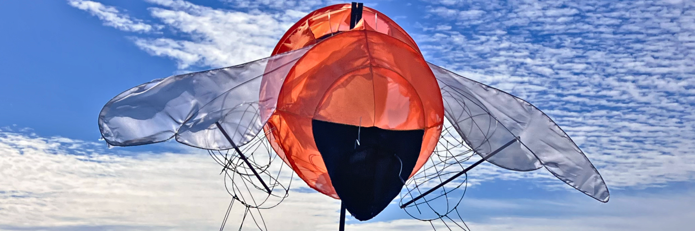
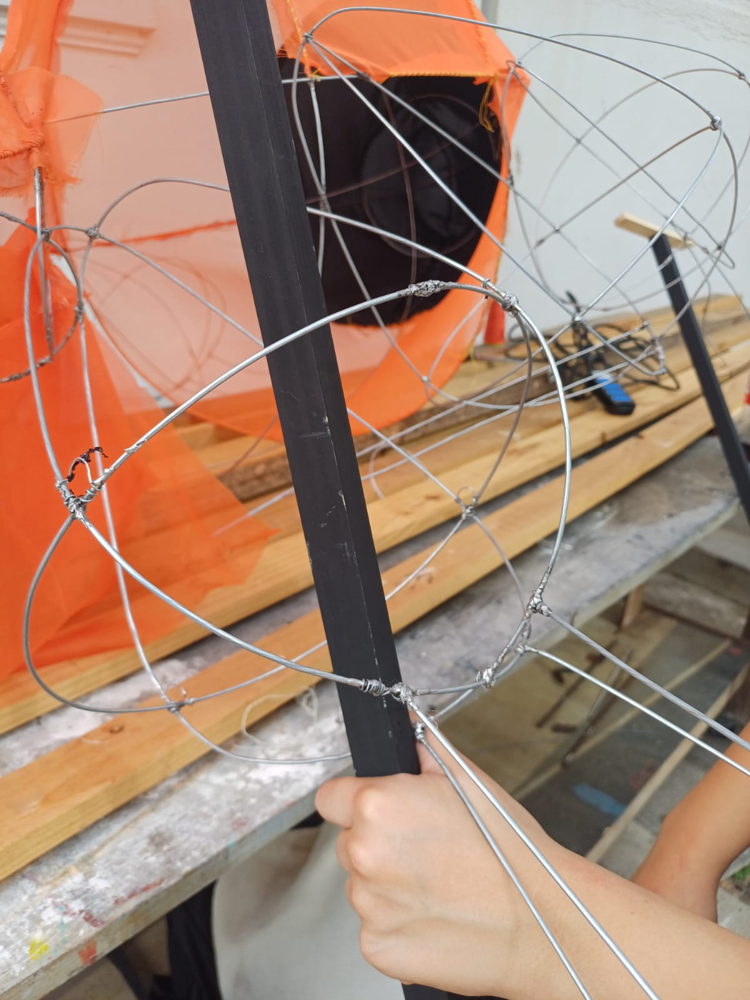
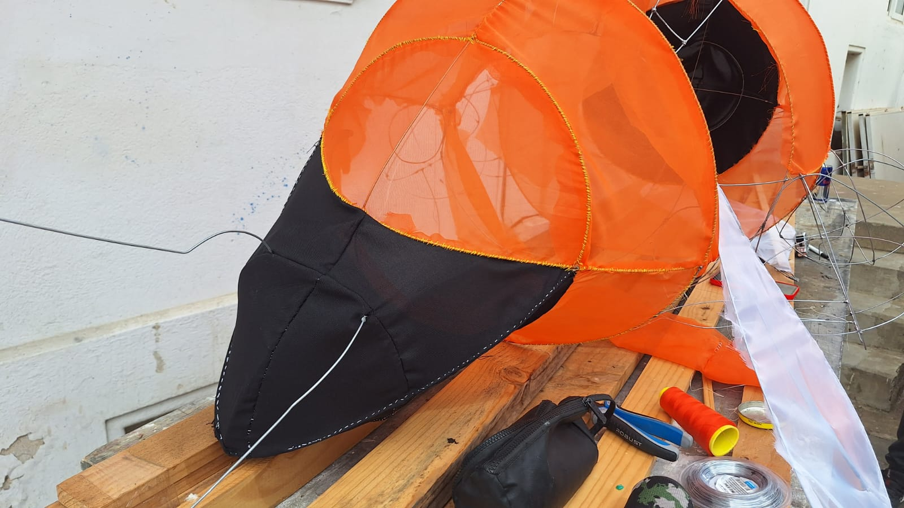

Bombus Dahlbomii
Se realizan alegorías de insectos para ser llevadas en el pasacalle Ea[d] 2024, este es el Bombus Dahlbomii, el abejorro gigante patagónico, especie endémica de sudamérica. Luego de analizar la morfología del insecto y sus movimientos más comunes para abstraer sus características principales, mi compañera y yo estuvimos encargadas de la construcción alegórica de este insecto chileno.
En proceso


Luego de soldar las piezas de alambre se forró con tela la estructura con tela para luego unir las piezas móviles.